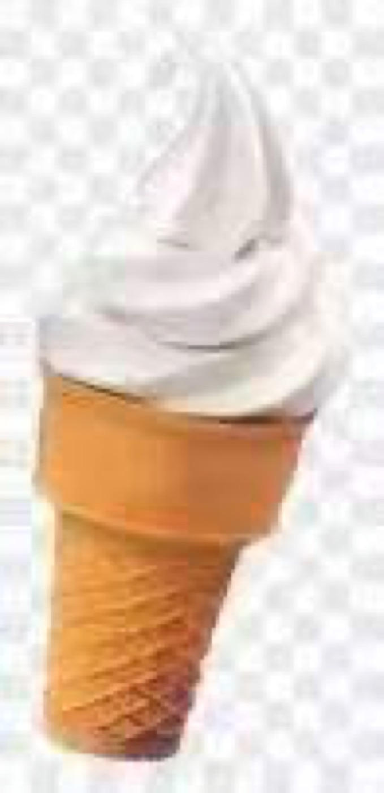
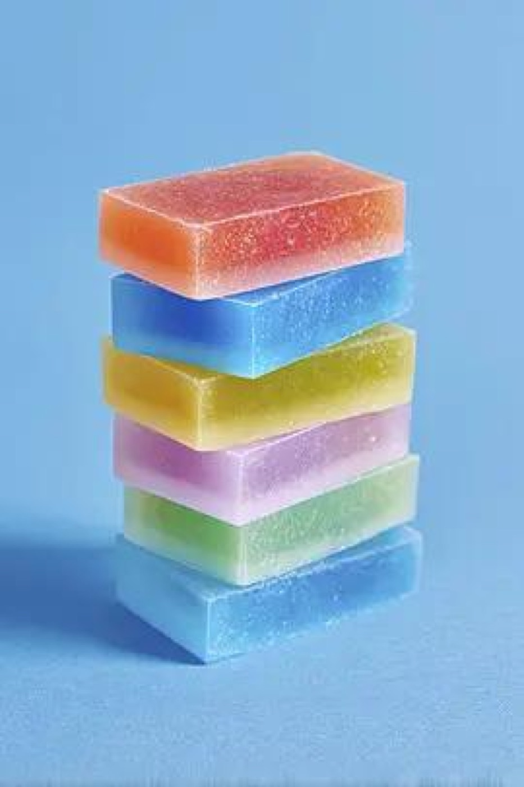

Teardown 04
用完即消失的固态洗护块（可溶解洗护瓶）

用户
注重环保、经常短途出行、露营的人群；讨厌塑料洗护瓶带来的包装垃圾，嫌弃分装瓶笨重、漏液
场景
旅行、露营日常清洁；使用洗护产品，用完之后不想留下塑料空瓶废弃物
当前方案痛点
传统洗护产品是液体+塑料瓶，塑料瓶使用后成为垃圾，回收难度大；旅行分装瓶容易漏液，反复清洗麻烦；塑料包装生产、丢弃都会带来环境负担
创意方案
把洗护成分做成固态皂块形态，去掉塑料容器；本身就是固体，使用时直接溶解，没有塑料瓶，用完本体消耗殆尽，无容器残留
核心价值
消除塑料包装，从源头减少塑料废弃物；轻便，便于出行携带，不存在漏液问题
方案短板与边界
遇水就会缓慢溶解，储存必须保持干燥；配方限制，部分功效成分难以做成固态；单次用量不好精准控制；用户需要适应固体洗护的使用习惯；使用场景和用户偏少
底层设计思想
- *消除载体容器，将产品本身和容器合二为一，用完产品即载体消失，不再产生废弃包装**
同思想延伸案例
- 甜筒冰淇淋：可食用蛋筒替代容器，同步消耗无垃圾
- 洗衣凝珠：水溶膜替代包装袋，遇水同步溶解
- 压缩毛巾：遇水膨胀即用，去掉外包装后无额外载体

AI 机会迁移
去掉独立的“容器/外壳模块”，核心功能主体本身自完备；任务执行完毕，不遗留冗余的中间产物，降低额外维护成本
这款冰淇淋的设计思想也是同样的